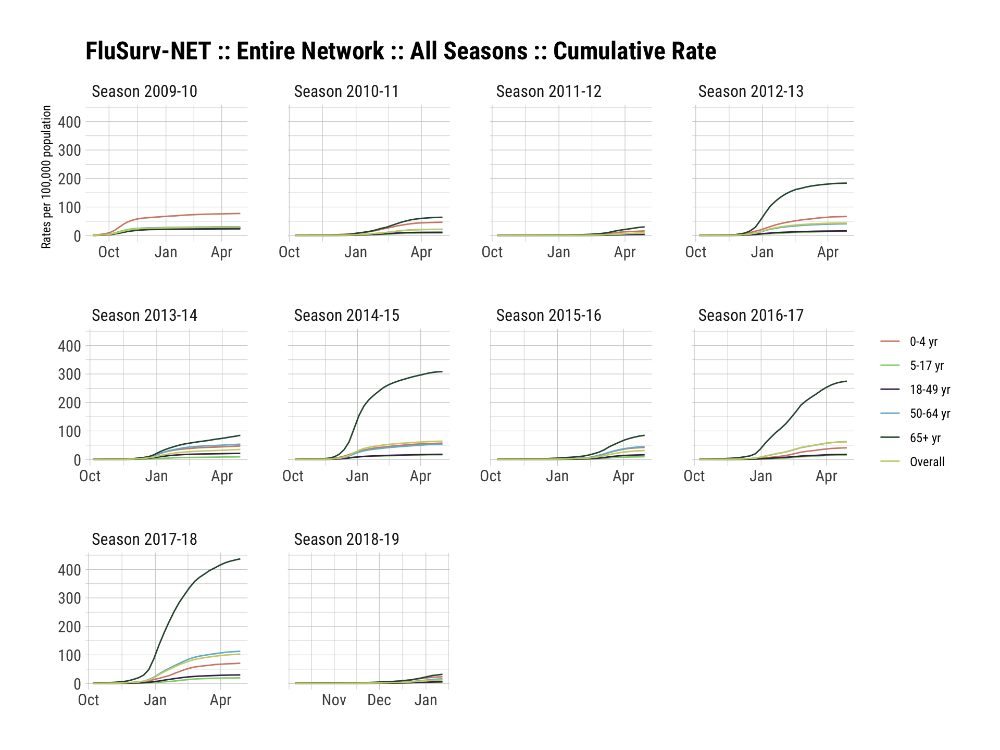
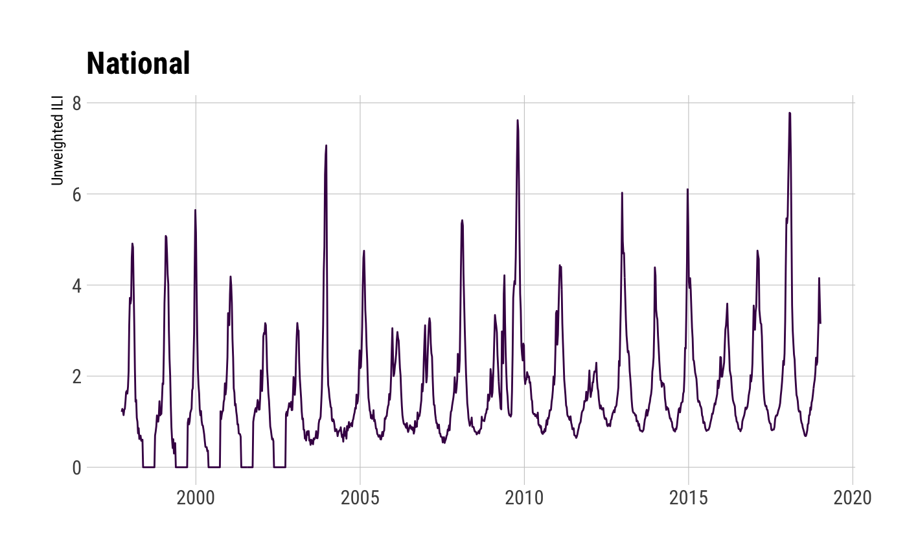
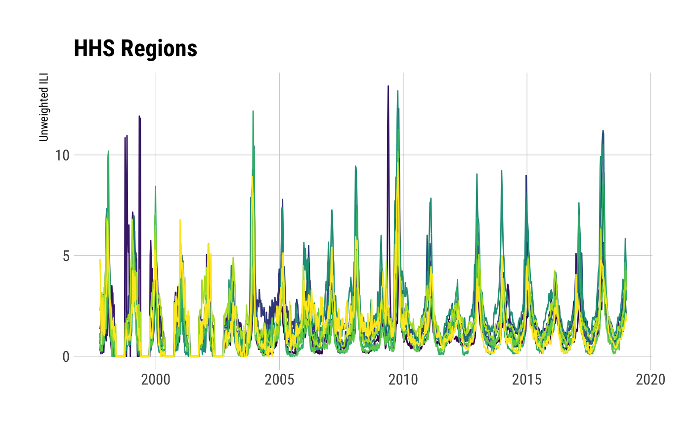
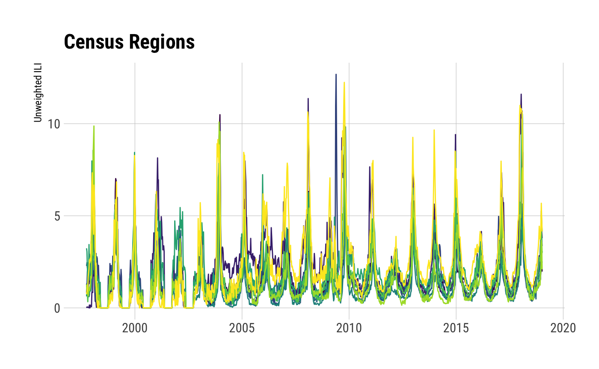
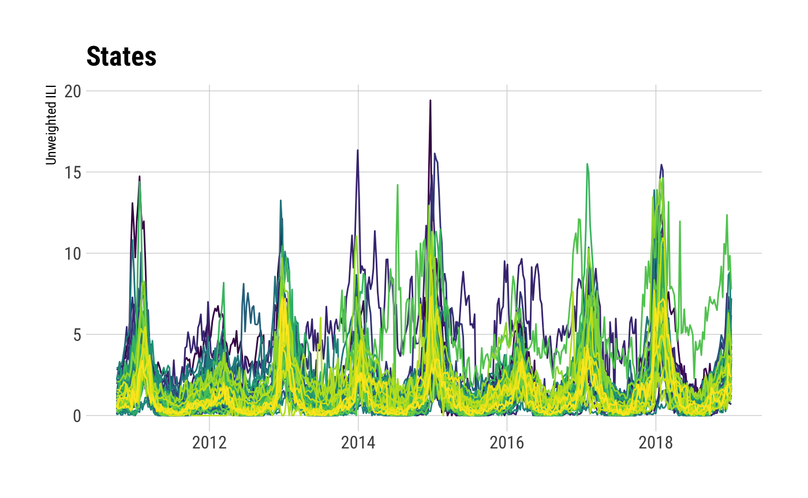
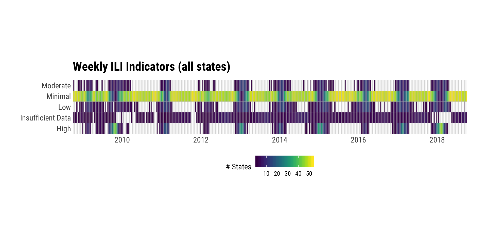
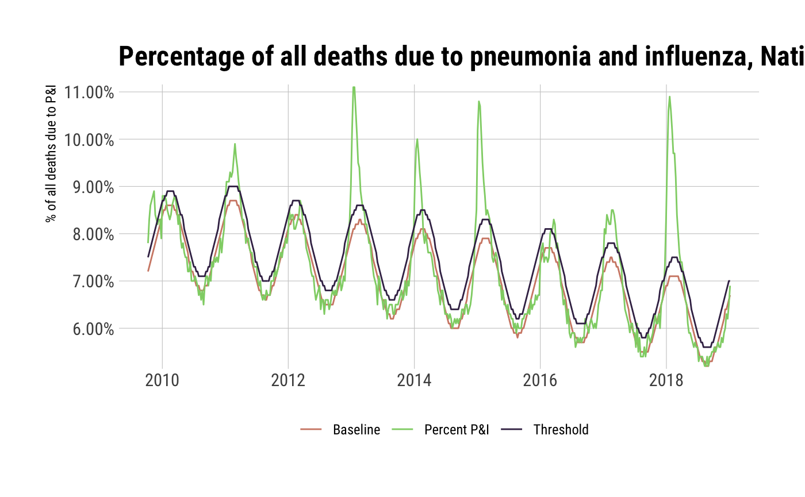
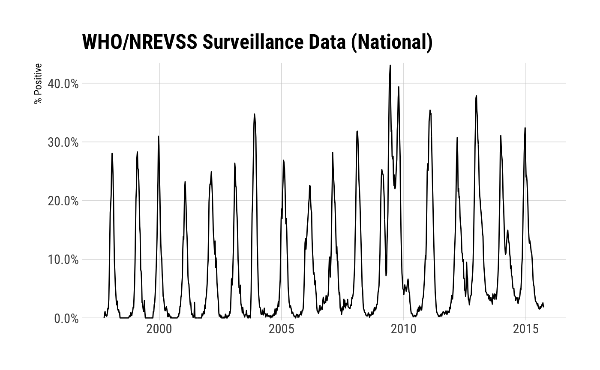

The CDC migrated to a new non-Flash portal and back-end APIs changed. This is a complete reimagining of the package and — as such — all your code is going to break…eventually. Older functions have been deprecated with warnings and will be removed at some point.
All folks providing feedback, code or suggestions will be added to the DESCRIPTION file. Please include how you would prefer to be cited in any issues you file.
If there’s a particular data set from https://www.cdc.gov/flu/weekly/fluviewinteractive.htm that you want and that isn’t in the package, please file it as an issue and be as specific as you can (screen shot if possible).
:mask: cdcfluview
Retrieve Flu Season Data from the United States Centers for Disease Control and Prevention (‘CDC’) ‘FluView’ Portal
Description
The U.S. Centers for Disease Control (CDC) maintains a portal http://gis.cdc.gov/grasp/fluview/fluportaldashboard.html for accessing state, regional and national influenza statistics as well as Mortality Surveillance Data. The Flash interface makes it difficult and time-consuming to select and retrieve influenza data. This package provides functions to access the data provided by the portal’s underlying API.
What’s Inside The Tin
The following functions are implemented:
-
age_group_distribution: Age Group Distribution of Influenza Positive Tests Reported by Public Health Laboratories -
cdc_basemap: Retrieve CDC U.S. Basemaps -
geographic_spread: State and Territorial Epidemiologists Reports of Geographic Spread of Influenza -
get_weekly_flu_report: Retrieves (high-level) weekly (XML) influenza surveillance report from the CDC -
hospitalizations: Laboratory-Confirmed Influenza Hospitalizations -
ilinet: Retrieve ILINet Surveillance Data -
ili_weekly_activity_indicators: Retrieve weekly state-level ILI indicators per-state for a given season -
pi_mortality: Pneumonia and Influenza Mortality Surveillance -
state_data_providers: Retrieve metadata about U.S. State CDC Provider Data -
surveillance_areas: Retrieve a list of valid sub-regions for each surveillance area. -
who_nrevss: Retrieve WHO/NREVSS Surveillance Data
MMWR ID Utilities:
-
mmwrid_map: MMWR ID to Calendar Mappings -
mmwr_week: Convert a Date to an MMWR day+week+year -
mmwr_weekday: Convert a Date to an MMWR weekday -
mmwr_week_to_date: Convert an MMWR year+week or year+week+day to a Date object
Deprecated functions:
-
get_flu_data: Retrieves state, regional or national influenza statistics from the CDC (deprecated) -
get_hosp_data: Retrieves influenza hospitalization statistics from the CDC (deprecated) -
get_state_data: Retrieves state/territory-level influenza statistics from the CDC (deprecated)
The following data sets are included:
-
hhs_regions: HHS Region Table (a data frame with 59 rows and 4 variables) -
census_regions: Census Region Table (a data frame with 51 rows and 2 variables) -
mmwrid_map: MMWR ID to Calendar Mappings (it is exported & available, no need to usedata())
NOTE
All development happens in branches now with only critical fixes being back-ported to the master branch when necessary.
Usage
library(cdcfluview)
library(hrbrthemes)
library(tidyverse)
# current verison
packageVersion("cdcfluview")## [1] '0.9.0'Age Group Distribution of Influenza Positive Tests Reported by Public Health Laboratories
## Observations: 1,872
## Variables: 16
## $ sea_label <chr> "2015-16", "2015-16", "2015-16", "2015-16", "2015-16", "2015-16", "2015-16", "2015-16", "20…
## $ age_label <fct> 0-4 yr, 0-4 yr, 0-4 yr, 0-4 yr, 0-4 yr, 0-4 yr, 0-4 yr, 0-4 yr, 0-4 yr, 0-4 yr, 0-4 yr, 0-4…
## $ vir_label <fct> A (Subtyping not Performed), A (Subtyping not Performed), A (Subtyping not Performed), A (S…
## $ count <int> 0, 1, 0, 1, 3, 0, 0, 0, 0, 0, 0, 0, 0, 0, 2, 2, 2, 3, 2, 2, 3, 3, 3, 0, 0, 2, 0, 1, 1, 0, 0…
## $ mmwrid <int> 2806, 2807, 2808, 2809, 2810, 2811, 2812, 2813, 2814, 2815, 2816, 2817, 2818, 2819, 2820, 2…
## $ seasonid <int> 55, 55, 55, 55, 55, 55, 55, 55, 55, 55, 55, 55, 55, 55, 55, 55, 55, 55, 55, 55, 55, 55, 55,…
## $ publishyearweekid <int> 2976, 2976, 2976, 2976, 2976, 2976, 2976, 2976, 2976, 2976, 2976, 2976, 2976, 2976, 2976, 2…
## $ sea_description <chr> "Season 2015-16", "Season 2015-16", "Season 2015-16", "Season 2015-16", "Season 2015-16", "…
## $ sea_startweek <int> 2806, 2806, 2806, 2806, 2806, 2806, 2806, 2806, 2806, 2806, 2806, 2806, 2806, 2806, 2806, 2…
## $ sea_endweek <int> 2857, 2857, 2857, 2857, 2857, 2857, 2857, 2857, 2857, 2857, 2857, 2857, 2857, 2857, 2857, 2…
## $ vir_description <chr> "A-Unk", "A-Unk", "A-Unk", "A-Unk", "A-Unk", "A-Unk", "A-Unk", "A-Unk", "A-Unk", "A-Unk", "…
## $ vir_startmmwrid <int> 1397, 1397, 1397, 1397, 1397, 1397, 1397, 1397, 1397, 1397, 1397, 1397, 1397, 1397, 1397, 1…
## $ vir_endmmwrid <int> 3131, 3131, 3131, 3131, 3131, 3131, 3131, 3131, 3131, 3131, 3131, 3131, 3131, 3131, 3131, 3…
## $ wk_start <date> 2015-10-04, 2015-10-11, 2015-10-18, 2015-10-25, 2015-11-01, 2015-11-08, 2015-11-15, 2015-1…
## $ wk_end <date> 2015-10-10, 2015-10-17, 2015-10-24, 2015-10-31, 2015-11-07, 2015-11-14, 2015-11-21, 2015-1…
## $ year_wk_num <int> 40, 41, 42, 43, 44, 45, 46, 47, 48, 49, 50, 51, 52, 1, 2, 3, 4, 5, 6, 7, 8, 9, 10, 11, 12, …State and Territorial Epidemiologists Reports of Geographic Spread of Influenza
## Observations: 28,151
## Variables: 7
## $ statename <chr> "Alabama", "Alabama", "Alabama", "Alabama", "Alabama", "Alabama", "Alabama", "Alabama", "Al…
## $ url <chr> "http://adph.org/influenza/", "http://adph.org/influenza/", "http://adph.org/influenza/", "…
## $ website <chr> "Influenza Surveillance", "Influenza Surveillance", "Influenza Surveillance", "Influenza Su…
## $ activity_estimate <chr> "No Activity", "No Activity", "No Activity", "Local Activity", "Sporadic", "Sporadic", "Spo…
## $ weekend <date> 2003-10-04, 2003-10-11, 2003-10-18, 2003-10-25, 2003-11-01, 2003-11-08, 2003-11-15, 2003-1…
## $ season <chr> "2003-04", "2003-04", "2003-04", "2003-04", "2003-04", "2003-04", "2003-04", "2003-04", "20…
## $ weeknumber <chr> "40", "41", "42", "43", "44", "45", "46", "47", "48", "49", "50", "51", "52", "53", "1", "2…Laboratory-Confirmed Influenza Hospitalizations
## surveillance_area region
## 1 flusurv Entire Network
## 2 eip California
## 3 eip Colorado
## 4 eip Connecticut
## 5 eip Entire Network
## 6 eip Georgia
## 7 eip Maryland
## 8 eip Minnesota
## 9 eip New Mexico
## 10 eip New York - Albany
## 11 eip New York - Rochester
## 12 eip Oregon
## 13 eip Tennessee
## 14 ihsp Entire Network
## 15 ihsp Idaho
## 16 ihsp Iowa
## 17 ihsp Michigan
## 18 ihsp Ohio
## 19 ihsp Oklahoma
## 20 ihsp Rhode Island
## 21 ihsp South Dakota
## 22 ihsp Utah## Observations: 1,746
## Variables: 14
## $ surveillance_area <chr> "FluSurv-NET", "FluSurv-NET", "FluSurv-NET", "FluSurv-NET", "FluSurv-NET", "FluSurv-NET", "…
## $ region <chr> "Entire Network", "Entire Network", "Entire Network", "Entire Network", "Entire Network", "…
## $ year <int> 2009, 2009, 2009, 2009, 2009, 2009, 2009, 2009, 2009, 2009, 2009, 2009, 2009, 2009, 2009, 2…
## $ season <int> 49, 49, 49, 49, 49, 49, 49, 49, 49, 49, 49, 49, 49, 49, 49, 49, 49, 49, 49, 49, 49, 49, 49,…
## $ wk_start <date> 2009-08-30, 2009-09-06, 2009-09-13, 2009-09-20, 2009-09-27, 2009-10-04, 2009-10-11, 2009-1…
## $ wk_end <date> 2009-09-05, 2009-09-12, 2009-09-19, 2009-09-26, 2009-10-03, 2009-10-10, 2009-10-17, 2009-1…
## $ year_wk_num <int> 35, 36, 37, 38, 39, 40, 41, 42, 43, 44, 45, 46, 47, 48, 49, 50, 51, 52, 1, 2, 3, 4, 5, 6, 7…
## $ rate <dbl> 0.5, 2.5, 4.6, 6.7, 10.9, 18.1, 28.3, 39.1, 47.3, 53.3, 57.5, 60.1, 61.6, 62.9, 64.1, 65.1,…
## $ weeklyrate <dbl> 0.5, 2.0, 2.0, 2.1, 4.3, 7.2, 10.2, 10.8, 8.2, 6.0, 4.2, 2.6, 1.5, 1.3, 1.3, 1.0, 1.2, 1.1,…
## $ age <int> 1, 1, 1, 1, 1, 1, 1, 1, 1, 1, 1, 1, 1, 1, 1, 1, 1, 1, 1, 1, 1, 1, 1, 1, 1, 1, 1, 1, 1, 1, 1…
## $ age_label <fct> 0-4 yr, 0-4 yr, 0-4 yr, 0-4 yr, 0-4 yr, 0-4 yr, 0-4 yr, 0-4 yr, 0-4 yr, 0-4 yr, 0-4 yr, 0-4…
## $ sea_label <chr> "2009-10", "2009-10", "2009-10", "2009-10", "2009-10", "2009-10", "2009-10", "2009-10", "20…
## $ sea_description <chr> "Season 2009-10", "Season 2009-10", "Season 2009-10", "Season 2009-10", "Season 2009-10", "…
## $ mmwrid <int> 2488, 2489, 2490, 2491, 2492, 2493, 2494, 2495, 2496, 2497, 2498, 2499, 2500, 2501, 2502, 2…ggplot(fs_nat, aes(wk_end, rate)) +
geom_line(aes(color=age_label, group=age_label)) +
facet_wrap(~sea_description, scales="free_x") +
scale_color_ipsum(name=NULL) +
labs(x=NULL, y="Rates per 100,000 population",
title="FluSurv-NET :: Entire Network :: All Seasons :: Cumulative Rate") +
theme_ipsum_rc()
## Observations: 180
## Variables: 14
## $ surveillance_area <chr> "EIP", "EIP", "EIP", "EIP", "EIP", "EIP", "EIP", "EIP", "EIP", "EIP", "EIP", "EIP", "EIP", …
## $ region <chr> "Entire Network", "Entire Network", "Entire Network", "Entire Network", "Entire Network", "…
## $ year <int> 2015, 2015, 2015, 2015, 2015, 2015, 2015, 2015, 2015, 2015, 2015, 2015, 2015, 2016, 2016, 2…
## $ season <int> 55, 55, 55, 55, 55, 55, 55, 55, 55, 55, 55, 55, 55, 55, 55, 55, 55, 55, 55, 55, 55, 55, 55,…
## $ wk_start <date> 2015-10-04, 2015-10-11, 2015-10-18, 2015-10-25, 2015-11-01, 2015-11-08, 2015-11-15, 2015-1…
## $ wk_end <date> 2015-10-10, 2015-10-17, 2015-10-24, 2015-10-31, 2015-11-07, 2015-11-14, 2015-11-21, 2015-1…
## $ year_wk_num <int> 40, 41, 42, 43, 44, 45, 46, 47, 48, 49, 50, 51, 52, 1, 2, 3, 4, 5, 6, 7, 8, 9, 10, 11, 12, …
## $ rate <dbl> 0.1, 0.3, 0.4, 0.5, 0.8, 0.8, 1.1, 1.4, 1.6, 1.7, 1.8, 2.1, 2.4, 2.9, 3.2, 3.5, 4.1, 5.3, 6…
## $ weeklyrate <dbl> 0.1, 0.3, 0.1, 0.1, 0.3, 0.0, 0.3, 0.3, 0.2, 0.1, 0.1, 0.3, 0.3, 0.5, 0.3, 0.3, 0.6, 1.2, 1…
## $ age <int> 1, 1, 1, 1, 1, 1, 1, 1, 1, 1, 1, 1, 1, 1, 1, 1, 1, 1, 1, 1, 1, 1, 1, 1, 1, 1, 1, 1, 1, 1, 2…
## $ age_label <fct> 0-4 yr, 0-4 yr, 0-4 yr, 0-4 yr, 0-4 yr, 0-4 yr, 0-4 yr, 0-4 yr, 0-4 yr, 0-4 yr, 0-4 yr, 0-4…
## $ sea_label <chr> "2015-16", "2015-16", "2015-16", "2015-16", "2015-16", "2015-16", "2015-16", "2015-16", "20…
## $ sea_description <chr> "Season 2015-16", "Season 2015-16", "Season 2015-16", "Season 2015-16", "Season 2015-16", "…
## $ mmwrid <int> 2806, 2807, 2808, 2809, 2810, 2811, 2812, 2813, 2814, 2815, 2816, 2817, 2818, 2819, 2820, 2…## Observations: 180
## Variables: 14
## $ surveillance_area <chr> "EIP", "EIP", "EIP", "EIP", "EIP", "EIP", "EIP", "EIP", "EIP", "EIP", "EIP", "EIP", "EIP", …
## $ region <chr> "Colorado", "Colorado", "Colorado", "Colorado", "Colorado", "Colorado", "Colorado", "Colora…
## $ year <int> 2015, 2015, 2015, 2015, 2015, 2015, 2015, 2015, 2015, 2015, 2015, 2015, 2015, 2016, 2016, 2…
## $ season <int> 55, 55, 55, 55, 55, 55, 55, 55, 55, 55, 55, 55, 55, 55, 55, 55, 55, 55, 55, 55, 55, 55, 55,…
## $ wk_start <date> 2015-10-04, 2015-10-11, 2015-10-18, 2015-10-25, 2015-11-01, 2015-11-08, 2015-11-15, 2015-1…
## $ wk_end <date> 2015-10-10, 2015-10-17, 2015-10-24, 2015-10-31, 2015-11-07, 2015-11-14, 2015-11-21, 2015-1…
## $ year_wk_num <int> 40, 41, 42, 43, 44, 45, 46, 47, 48, 49, 50, 51, 52, 1, 2, 3, 4, 5, 6, 7, 8, 9, 10, 11, 12, …
## $ rate <dbl> 0.0, 0.0, 0.6, 0.6, 0.6, 0.6, 1.2, 1.7, 1.7, 1.7, 1.7, 1.7, 2.9, 3.5, 3.5, 3.5, 4.1, 6.4, 8…
## $ weeklyrate <dbl> 0.0, 0.0, 0.6, 0.0, 0.0, 0.0, 0.6, 0.6, 0.0, 0.0, 0.0, 0.0, 1.2, 0.6, 0.0, 0.0, 0.6, 2.3, 2…
## $ age <int> 1, 1, 1, 1, 1, 1, 1, 1, 1, 1, 1, 1, 1, 1, 1, 1, 1, 1, 1, 1, 1, 1, 1, 1, 1, 1, 1, 1, 1, 1, 2…
## $ age_label <fct> 0-4 yr, 0-4 yr, 0-4 yr, 0-4 yr, 0-4 yr, 0-4 yr, 0-4 yr, 0-4 yr, 0-4 yr, 0-4 yr, 0-4 yr, 0-4…
## $ sea_label <chr> "2015-16", "2015-16", "2015-16", "2015-16", "2015-16", "2015-16", "2015-16", "2015-16", "20…
## $ sea_description <chr> "Season 2015-16", "Season 2015-16", "Season 2015-16", "Season 2015-16", "Season 2015-16", "…
## $ mmwrid <int> 2806, 2807, 2808, 2809, 2810, 2811, 2812, 2813, 2814, 2815, 2816, 2817, 2818, 2819, 2820, 2…## Observations: 180
## Variables: 14
## $ surveillance_area <chr> "IHSP", "IHSP", "IHSP", "IHSP", "IHSP", "IHSP", "IHSP", "IHSP", "IHSP", "IHSP", "IHSP", "IH…
## $ region <chr> "Entire Network", "Entire Network", "Entire Network", "Entire Network", "Entire Network", "…
## $ year <int> 2015, 2015, 2015, 2015, 2015, 2015, 2015, 2015, 2015, 2015, 2015, 2015, 2015, 2016, 2016, 2…
## $ season <int> 55, 55, 55, 55, 55, 55, 55, 55, 55, 55, 55, 55, 55, 55, 55, 55, 55, 55, 55, 55, 55, 55, 55,…
## $ wk_start <date> 2015-10-04, 2015-10-11, 2015-10-18, 2015-10-25, 2015-11-01, 2015-11-08, 2015-11-15, 2015-1…
## $ wk_end <date> 2015-10-10, 2015-10-17, 2015-10-24, 2015-10-31, 2015-11-07, 2015-11-14, 2015-11-21, 2015-1…
## $ year_wk_num <int> 40, 41, 42, 43, 44, 45, 46, 47, 48, 49, 50, 51, 52, 1, 2, 3, 4, 5, 6, 7, 8, 9, 10, 11, 12, …
## $ rate <dbl> 0.0, 0.0, 0.4, 0.4, 0.4, 1.1, 1.1, 1.1, 1.1, 1.5, 1.8, 2.2, 2.2, 2.6, 2.6, 2.6, 2.9, 4.0, 5…
## $ weeklyrate <dbl> 0.0, 0.0, 0.4, 0.0, 0.0, 0.7, 0.0, 0.0, 0.0, 0.4, 0.4, 0.4, 0.0, 0.4, 0.0, 0.0, 0.4, 1.1, 1…
## $ age <int> 1, 1, 1, 1, 1, 1, 1, 1, 1, 1, 1, 1, 1, 1, 1, 1, 1, 1, 1, 1, 1, 1, 1, 1, 1, 1, 1, 1, 1, 1, 2…
## $ age_label <fct> 0-4 yr, 0-4 yr, 0-4 yr, 0-4 yr, 0-4 yr, 0-4 yr, 0-4 yr, 0-4 yr, 0-4 yr, 0-4 yr, 0-4 yr, 0-4…
## $ sea_label <chr> "2015-16", "2015-16", "2015-16", "2015-16", "2015-16", "2015-16", "2015-16", "2015-16", "20…
## $ sea_description <chr> "Season 2015-16", "Season 2015-16", "Season 2015-16", "Season 2015-16", "Season 2015-16", "…
## $ mmwrid <int> 2806, 2807, 2808, 2809, 2810, 2811, 2812, 2813, 2814, 2815, 2816, 2817, 2818, 2819, 2820, 2…## Observations: 180
## Variables: 14
## $ surveillance_area <chr> "IHSP", "IHSP", "IHSP", "IHSP", "IHSP", "IHSP", "IHSP", "IHSP", "IHSP", "IHSP", "IHSP", "IH…
## $ region <chr> "Oklahoma", "Oklahoma", "Oklahoma", "Oklahoma", "Oklahoma", "Oklahoma", "Oklahoma", "Oklaho…
## $ year <int> 2010, 2010, 2010, 2010, 2010, 2010, 2010, 2010, 2010, 2010, 2010, 2010, 2010, 2011, 2011, 2…
## $ season <int> 50, 50, 50, 50, 50, 50, 50, 50, 50, 50, 50, 50, 50, 50, 50, 50, 50, 50, 50, 50, 50, 50, 50,…
## $ wk_start <date> 2010-10-03, 2010-10-10, 2010-10-17, 2010-10-24, 2010-10-31, 2010-11-07, 2010-11-14, 2010-1…
## $ wk_end <date> 2010-10-09, 2010-10-16, 2010-10-23, 2010-10-30, 2010-11-06, 2010-11-13, 2010-11-20, 2010-1…
## $ year_wk_num <int> 40, 41, 42, 43, 44, 45, 46, 47, 48, 49, 50, 51, 52, 1, 2, 3, 4, 5, 6, 7, 8, 9, 10, 11, 12, …
## $ rate <dbl> 0.0, 0.0, 1.2, 1.2, 1.2, 1.2, 1.2, 1.2, 1.2, 2.4, 2.4, 6.1, 14.6, 17.0, 32.8, 49.9, 76.6, 9…
## $ weeklyrate <dbl> 0.0, 0.0, 1.2, 0.0, 0.0, 0.0, 0.0, 0.0, 0.0, 1.2, 0.0, 3.6, 8.5, 2.4, 15.8, 17.0, 26.8, 21.…
## $ age <int> 1, 1, 1, 1, 1, 1, 1, 1, 1, 1, 1, 1, 1, 1, 1, 1, 1, 1, 1, 1, 1, 1, 1, 1, 1, 1, 1, 1, 1, 1, 2…
## $ age_label <fct> 0-4 yr, 0-4 yr, 0-4 yr, 0-4 yr, 0-4 yr, 0-4 yr, 0-4 yr, 0-4 yr, 0-4 yr, 0-4 yr, 0-4 yr, 0-4…
## $ sea_label <chr> "2010-11", "2010-11", "2010-11", "2010-11", "2010-11", "2010-11", "2010-11", "2010-11", "20…
## $ sea_description <chr> "Season 2010-11", "Season 2010-11", "Season 2010-11", "Season 2010-11", "Season 2010-11", "…
## $ mmwrid <int> 2545, 2546, 2547, 2548, 2549, 2550, 2551, 2552, 2553, 2554, 2555, 2556, 2557, 2558, 2559, 2…Retrieve ILINet Surveillance Data
walk(c("national", "hhs", "census", "state"), ~{
ili_df <- ilinet(region = .x)
print(glimpse(ili_df))
ggplot(ili_df, aes(week_start, unweighted_ili, group=region, color=region)) +
geom_line() +
viridis::scale_color_viridis(discrete=TRUE) +
labs(x=NULL, y="Unweighted ILI", title=ili_df$region_type[1]) +
theme_ipsum_rc(grid="XY") +
theme(legend.position = "none") -> gg
print(gg)
})## Observations: 1,111
## Variables: 16
## $ region_type <chr> "National", "National", "National", "National", "National", "National", "National", "Nationa…
## $ region <chr> "National", "National", "National", "National", "National", "National", "National", "Nationa…
## $ year <int> 1997, 1997, 1997, 1997, 1997, 1997, 1997, 1997, 1997, 1997, 1997, 1997, 1997, 1997, 1998, 19…
## $ week <int> 40, 41, 42, 43, 44, 45, 46, 47, 48, 49, 50, 51, 52, 53, 1, 2, 3, 4, 5, 6, 7, 8, 9, 10, 11, 1…
## $ weighted_ili <dbl> 1.101480, 1.200070, 1.378760, 1.199200, 1.656180, 1.413260, 1.986800, 2.447490, 1.739010, 1.…
## $ unweighted_ili <dbl> 1.216860, 1.280640, 1.239060, 1.144730, 1.261120, 1.282750, 1.445790, 1.647960, 1.675170, 1.…
## $ age_0_4 <dbl> 179, 199, 228, 188, 217, 178, 294, 288, 268, 299, 346, 348, 510, 579, 639, 690, 856, 824, 88…
## $ age_25_49 <dbl> NA, NA, NA, NA, NA, NA, NA, NA, NA, NA, NA, NA, NA, NA, NA, NA, NA, NA, NA, NA, NA, NA, NA, …
## $ age_25_64 <dbl> 157, 151, 153, 193, 162, 148, 240, 293, 206, 282, 268, 235, 404, 584, 759, 654, 679, 817, 76…
## $ age_5_24 <dbl> 205, 242, 266, 236, 280, 281, 328, 456, 343, 415, 388, 362, 492, 576, 810, 1121, 1440, 1600,…
## $ age_50_64 <dbl> NA, NA, NA, NA, NA, NA, NA, NA, NA, NA, NA, NA, NA, NA, NA, NA, NA, NA, NA, NA, NA, NA, NA, …
## $ age_65 <dbl> 29, 23, 34, 36, 41, 48, 70, 63, 69, 102, 81, 59, 113, 207, 207, 148, 151, 196, 233, 146, 119…
## $ ilitotal <dbl> 570, 615, 681, 653, 700, 655, 932, 1100, 886, 1098, 1083, 1004, 1519, 1946, 2415, 2613, 3126…
## $ num_of_providers <dbl> 192, 191, 219, 213, 213, 195, 248, 256, 252, 253, 242, 190, 251, 250, 254, 255, 245, 245, 23…
## $ total_patients <dbl> 46842, 48023, 54961, 57044, 55506, 51062, 64463, 66749, 52890, 67887, 61314, 47719, 48429, 5…
## $ week_start <date> 1997-09-28, 1997-10-05, 1997-10-12, 1997-10-19, 1997-10-26, 1997-11-02, 1997-11-09, 1997-11…
## # A tibble: 1,111 x 16
## region_type region year week weighted_ili unweighted_ili age_0_4 age_25_49 age_25_64 age_5_24 age_50_64 age_65
## <chr> <chr> <int> <int> <dbl> <dbl> <dbl> <dbl> <dbl> <dbl> <dbl> <dbl>
## 1 National Natio… 1997 40 1.10 1.22 179 NA 157 205 NA 29
## 2 National Natio… 1997 41 1.20 1.28 199 NA 151 242 NA 23
## 3 National Natio… 1997 42 1.38 1.24 228 NA 153 266 NA 34
## 4 National Natio… 1997 43 1.20 1.14 188 NA 193 236 NA 36
## 5 National Natio… 1997 44 1.66 1.26 217 NA 162 280 NA 41
## 6 National Natio… 1997 45 1.41 1.28 178 NA 148 281 NA 48
## 7 National Natio… 1997 46 1.99 1.45 294 NA 240 328 NA 70
## 8 National Natio… 1997 47 2.45 1.65 288 NA 293 456 NA 63
## 9 National Natio… 1997 48 1.74 1.68 268 NA 206 343 NA 69
## 10 National Natio… 1997 49 1.94 1.62 299 NA 282 415 NA 102
## # … with 1,101 more rows, and 4 more variables: ilitotal <dbl>, num_of_providers <dbl>, total_patients <dbl>,
## # week_start <date>
## Observations: 11,110
## Variables: 16
## $ region_type <chr> "HHS Regions", "HHS Regions", "HHS Regions", "HHS Regions", "HHS Regions", "HHS Regions", "H…
## $ region <fct> Region 1, Region 2, Region 3, Region 4, Region 5, Region 6, Region 7, Region 8, Region 9, Re…
## $ year <int> 1997, 1997, 1997, 1997, 1997, 1997, 1997, 1997, 1997, 1997, 1997, 1997, 1997, 1997, 1997, 19…
## $ week <int> 40, 40, 40, 40, 40, 40, 40, 40, 40, 40, 41, 41, 41, 41, 41, 41, 41, 41, 41, 41, 42, 42, 42, …
## $ weighted_ili <dbl> 0.498535, 0.374963, 1.354280, 0.400338, 1.229260, 1.018980, 0.871791, 0.516017, 1.807610, 4.…
## $ unweighted_ili <dbl> 0.623848, 0.384615, 1.341720, 0.450010, 0.901266, 0.747384, 1.152860, 0.422654, 2.258780, 4.…
## $ age_0_4 <dbl> 15, 0, 6, 12, 31, 2, 0, 2, 80, 31, 14, 0, 4, 21, 36, 2, 0, 0, 103, 19, 35, 0, 3, 19, 66, 2, …
## $ age_25_49 <dbl> NA, NA, NA, NA, NA, NA, NA, NA, NA, NA, NA, NA, NA, NA, NA, NA, NA, NA, NA, NA, NA, NA, NA, …
## $ age_25_64 <dbl> 7, 3, 7, 23, 24, 1, 4, 0, 76, 12, 14, 2, 19, 7, 23, 2, 0, 1, 76, 7, 15, 0, 17, 15, 29, 2, 3,…
## $ age_5_24 <dbl> 22, 0, 15, 11, 30, 2, 18, 3, 74, 30, 29, 0, 16, 14, 41, 2, 13, 8, 84, 35, 35, 0, 24, 18, 75,…
## $ age_50_64 <dbl> NA, NA, NA, NA, NA, NA, NA, NA, NA, NA, NA, NA, NA, NA, NA, NA, NA, NA, NA, NA, NA, NA, NA, …
## $ age_65 <dbl> 0, 0, 4, 0, 4, 0, 5, 0, 13, 3, 0, 0, 3, 2, 4, 0, 2, 0, 11, 1, 0, 1, 2, 2, 16, 0, 2, 0, 9, 2,…
## $ ilitotal <dbl> 44, 3, 32, 46, 89, 5, 27, 5, 243, 76, 57, 2, 42, 44, 104, 6, 15, 9, 274, 62, 85, 1, 46, 54, …
## $ num_of_providers <dbl> 32, 7, 16, 29, 49, 4, 14, 5, 23, 13, 29, 7, 17, 31, 48, 4, 14, 6, 23, 12, 40, 7, 15, 33, 64,…
## $ total_patients <dbl> 7053, 780, 2385, 10222, 9875, 669, 2342, 1183, 10758, 1575, 6987, 872, 2740, 11310, 9618, 68…
## $ week_start <date> 1997-09-28, 1997-09-28, 1997-09-28, 1997-09-28, 1997-09-28, 1997-09-28, 1997-09-28, 1997-09…
## # A tibble: 11,110 x 16
## region_type region year week weighted_ili unweighted_ili age_0_4 age_25_49 age_25_64 age_5_24 age_50_64 age_65
## <chr> <fct> <int> <int> <dbl> <dbl> <dbl> <dbl> <dbl> <dbl> <dbl> <dbl>
## 1 HHS Regions Regio… 1997 40 0.499 0.624 15 NA 7 22 NA 0
## 2 HHS Regions Regio… 1997 40 0.375 0.385 0 NA 3 0 NA 0
## 3 HHS Regions Regio… 1997 40 1.35 1.34 6 NA 7 15 NA 4
## 4 HHS Regions Regio… 1997 40 0.400 0.450 12 NA 23 11 NA 0
## 5 HHS Regions Regio… 1997 40 1.23 0.901 31 NA 24 30 NA 4
## 6 HHS Regions Regio… 1997 40 1.02 0.747 2 NA 1 2 NA 0
## 7 HHS Regions Regio… 1997 40 0.872 1.15 0 NA 4 18 NA 5
## 8 HHS Regions Regio… 1997 40 0.516 0.423 2 NA 0 3 NA 0
## 9 HHS Regions Regio… 1997 40 1.81 2.26 80 NA 76 74 NA 13
## 10 HHS Regions Regio… 1997 40 4.74 4.83 31 NA 12 30 NA 3
## # … with 11,100 more rows, and 4 more variables: ilitotal <dbl>, num_of_providers <dbl>, total_patients <dbl>,
## # week_start <date>
## Observations: 9,999
## Variables: 16
## $ region_type <chr> "Census Regions", "Census Regions", "Census Regions", "Census Regions", "Census Regions", "C…
## $ region <chr> "New England", "Mid-Atlantic", "East North Central", "West North Central", "South Atlantic",…
## $ year <int> 1997, 1997, 1997, 1997, 1997, 1997, 1997, 1997, 1997, 1997, 1997, 1997, 1997, 1997, 1997, 19…
## $ week <int> 40, 40, 40, 40, 40, 40, 40, 40, 40, 41, 41, 41, 41, 41, 41, 41, 41, 41, 42, 42, 42, 42, 42, …
## $ weighted_ili <dbl> 0.4985350, 0.8441440, 0.7924860, 1.7640500, 0.5026620, 0.0542283, 1.0189800, 2.2587800, 2.04…
## $ unweighted_ili <dbl> 0.6238480, 1.3213800, 0.8187380, 1.2793900, 0.7233800, 0.0688705, 0.7473840, 2.2763300, 3.23…
## $ age_0_4 <dbl> 15, 4, 28, 3, 14, 0, 2, 87, 26, 14, 4, 36, 0, 21, 0, 2, 93, 29, 35, 3, 65, 1, 19, 0, 2, 84, …
## $ age_25_49 <dbl> NA, NA, NA, NA, NA, NA, NA, NA, NA, NA, NA, NA, NA, NA, NA, NA, NA, NA, NA, NA, NA, NA, NA, …
## $ age_25_64 <dbl> 7, 8, 20, 8, 22, 3, 1, 71, 17, 14, 13, 23, 1, 14, 1, 2, 72, 11, 15, 11, 27, 5, 21, 0, 2, 55,…
## $ age_5_24 <dbl> 22, 12, 28, 20, 14, 0, 2, 71, 36, 29, 8, 39, 18, 22, 0, 2, 80, 44, 35, 16, 74, 9, 24, 2, 2, …
## $ age_50_64 <dbl> NA, NA, NA, NA, NA, NA, NA, NA, NA, NA, NA, NA, NA, NA, NA, NA, NA, NA, NA, NA, NA, NA, NA, …
## $ age_65 <dbl> 0, 4, 3, 6, 0, 0, 0, 15, 1, 0, 2, 2, 4, 3, 0, 0, 10, 2, 0, 3, 12, 6, 2, 0, 0, 9, 2, 0, 1, 14…
## $ ilitotal <dbl> 44, 28, 79, 37, 50, 3, 5, 244, 80, 57, 27, 100, 23, 60, 1, 6, 255, 86, 85, 33, 178, 21, 66, …
## $ num_of_providers <dbl> 32, 13, 47, 17, 30, 9, 4, 16, 24, 29, 13, 46, 17, 32, 10, 4, 17, 23, 40, 12, 62, 16, 33, 10,…
## $ total_patients <dbl> 7053, 2119, 9649, 2892, 6912, 4356, 669, 10719, 2473, 6987, 2384, 9427, 2823, 7591, 4947, 68…
## $ week_start <date> 1997-09-28, 1997-09-28, 1997-09-28, 1997-09-28, 1997-09-28, 1997-09-28, 1997-09-28, 1997-09…
## # A tibble: 9,999 x 16
## region_type region year week weighted_ili unweighted_ili age_0_4 age_25_49 age_25_64 age_5_24 age_50_64 age_65
## <chr> <chr> <int> <int> <dbl> <dbl> <dbl> <dbl> <dbl> <dbl> <dbl> <dbl>
## 1 Census Reg… New E… 1997 40 0.499 0.624 15 NA 7 22 NA 0
## 2 Census Reg… Mid-A… 1997 40 0.844 1.32 4 NA 8 12 NA 4
## 3 Census Reg… East … 1997 40 0.792 0.819 28 NA 20 28 NA 3
## 4 Census Reg… West … 1997 40 1.76 1.28 3 NA 8 20 NA 6
## 5 Census Reg… South… 1997 40 0.503 0.723 14 NA 22 14 NA 0
## 6 Census Reg… East … 1997 40 0.0542 0.0689 0 NA 3 0 NA 0
## 7 Census Reg… West … 1997 40 1.02 0.747 2 NA 1 2 NA 0
## 8 Census Reg… Mount… 1997 40 2.26 2.28 87 NA 71 71 NA 15
## 9 Census Reg… Pacif… 1997 40 2.05 3.23 26 NA 17 36 NA 1
## 10 Census Reg… New E… 1997 41 0.643 0.816 14 NA 14 29 NA 0
## # … with 9,989 more rows, and 4 more variables: ilitotal <dbl>, num_of_providers <dbl>, total_patients <dbl>,
## # week_start <date>
## Observations: 23,120
## Variables: 16
## $ region_type <chr> "States", "States", "States", "States", "States", "States", "States", "States", "States", "S…
## $ region <chr> "Alabama", "Alaska", "Arizona", "Arkansas", "California", "Colorado", "Connecticut", "Delawa…
## $ year <int> 2010, 2010, 2010, 2010, 2010, 2010, 2010, 2010, 2010, 2010, 2010, 2010, 2010, 2010, 2010, 20…
## $ week <int> 40, 40, 40, 40, 40, 40, 40, 40, 40, 40, 40, 40, 40, 40, 40, 40, 40, 40, 40, 40, 40, 40, 40, …
## $ weighted_ili <dbl> NA, NA, NA, NA, NA, NA, NA, NA, NA, NA, NA, NA, NA, NA, NA, NA, NA, NA, NA, NA, NA, NA, NA, …
## $ unweighted_ili <dbl> 2.1347700, 0.8751460, 0.6747210, 0.6960560, 1.9541200, 0.6606840, 0.0783085, 0.1001250, 2.80…
## $ age_0_4 <dbl> NA, NA, NA, NA, NA, NA, NA, NA, NA, NA, NA, NA, NA, NA, NA, NA, NA, NA, NA, NA, NA, NA, NA, …
## $ age_25_49 <dbl> NA, NA, NA, NA, NA, NA, NA, NA, NA, NA, NA, NA, NA, NA, NA, NA, NA, NA, NA, NA, NA, NA, NA, …
## $ age_25_64 <dbl> NA, NA, NA, NA, NA, NA, NA, NA, NA, NA, NA, NA, NA, NA, NA, NA, NA, NA, NA, NA, NA, NA, NA, …
## $ age_5_24 <dbl> NA, NA, NA, NA, NA, NA, NA, NA, NA, NA, NA, NA, NA, NA, NA, NA, NA, NA, NA, NA, NA, NA, NA, …
## $ age_50_64 <dbl> NA, NA, NA, NA, NA, NA, NA, NA, NA, NA, NA, NA, NA, NA, NA, NA, NA, NA, NA, NA, NA, NA, NA, …
## $ age_65 <dbl> NA, NA, NA, NA, NA, NA, NA, NA, NA, NA, NA, NA, NA, NA, NA, NA, NA, NA, NA, NA, NA, NA, NA, …
## $ ilitotal <dbl> 249, 15, 172, 18, 632, 134, 3, 4, 73, NA, 647, 20, 19, 505, 65, 10, 39, 19, 391, 22, 117, 16…
## $ num_of_providers <dbl> 35, 7, 49, 15, 112, 14, 12, 13, 4, NA, 62, 18, 12, 74, 44, 6, 40, 14, 41, 30, 17, 56, 47, 17…
## $ total_patients <dbl> 11664, 1714, 25492, 2586, 32342, 20282, 3831, 3995, 2599, NA, 40314, 1943, 4579, 39390, 1252…
## $ week_start <date> 2010-10-03, 2010-10-03, 2010-10-03, 2010-10-03, 2010-10-03, 2010-10-03, 2010-10-03, 2010-10…
## # A tibble: 23,120 x 16
## region_type region year week weighted_ili unweighted_ili age_0_4 age_25_49 age_25_64 age_5_24 age_50_64 age_65
## <chr> <chr> <int> <int> <dbl> <dbl> <dbl> <dbl> <dbl> <dbl> <dbl> <dbl>
## 1 States Alaba… 2010 40 NA 2.13 NA NA NA NA NA NA
## 2 States Alaska 2010 40 NA 0.875 NA NA NA NA NA NA
## 3 States Arizo… 2010 40 NA 0.675 NA NA NA NA NA NA
## 4 States Arkan… 2010 40 NA 0.696 NA NA NA NA NA NA
## 5 States Calif… 2010 40 NA 1.95 NA NA NA NA NA NA
## 6 States Color… 2010 40 NA 0.661 NA NA NA NA NA NA
## 7 States Conne… 2010 40 NA 0.0783 NA NA NA NA NA NA
## 8 States Delaw… 2010 40 NA 0.100 NA NA NA NA NA NA
## 9 States Distr… 2010 40 NA 2.81 NA NA NA NA NA NA
## 10 States Flori… 2010 40 NA NA NA NA NA NA NA NA
## # … with 23,110 more rows, and 4 more variables: ilitotal <dbl>, num_of_providers <dbl>, total_patients <dbl>,
## # week_start <date>
Retrieve weekly state-level ILI indicators per-state for a given season
## # A tibble: 2,805 x 8
## statename url website activity_level activity_level_l… weekend season weeknumber
## * <chr> <chr> <chr> <dbl> <chr> <date> <chr> <dbl>
## 1 Alabama http://adph.org/influenza/ Influenza Sur… 2 Minimal 2017-10-07 2017-… 40
## 2 Alaska "http://dhss.alaska.gov/dp… Influenza Sur… 1 Minimal 2017-10-07 2017-… 40
## 3 Arizona http://www.azdhs.gov/phs/o… Influenza & R… 2 Minimal 2017-10-07 2017-… 40
## 4 Arkansas http://www.healthy.arkansa… Communicable … 1 Minimal 2017-10-07 2017-… 40
## 5 California https://www.cdph.ca.gov/Pr… Influenza (Fl… 2 Minimal 2017-10-07 2017-… 40
## 6 Colorado https://www.colorado.gov/p… Influenza Sur… 1 Minimal 2017-10-07 2017-… 40
## 7 Connecticut http://www.portal.ct.gov/D… Flu Statistics 1 Minimal 2017-10-07 2017-… 40
## 8 Delaware http://dhss.delaware.gov/d… Weekly Influe… 1 Minimal 2017-10-07 2017-… 40
## 9 District of… http://doh.dc.gov/page/inf… Influenza Inf… 2 Minimal 2017-10-07 2017-… 40
## 10 Florida "http://www.floridahealth.… Weekly Influe… 1 Minimal 2017-10-07 2017-… 40
## # … with 2,795 more rowsxdf <- map_df(2008:2017, ili_weekly_activity_indicators)
count(xdf, weekend, activity_level_label) %>%
complete(weekend, activity_level_label) %>%
ggplot(aes(weekend, activity_level_label, fill=n)) +
geom_tile(color="#c2c2c2", size=0.1) +
scale_x_date(expand=c(0,0)) +
viridis::scale_fill_viridis(name="# States", na.value="White") +
labs(x=NULL, y=NULL, title="Weekly ILI Indicators (all states)") +
coord_fixed(100/1) +
theme_ipsum_rc(grid="") +
theme(legend.position="bottom")
Pneumonia and Influenza Mortality Surveillance
## # A tibble: 483 x 19
## seasonid baseline threshold percent_pni percent_complete number_influenza number_pneumonia all_deaths total_pni
## <chr> <dbl> <dbl> <dbl> <dbl> <dbl> <dbl> <dbl> <dbl>
## 1 58 0.055 0.0580 0.0560 1 10 2880 51416 2890
## 2 58 0.0560 0.059 0.055 1 12 2765 50411 2777
## 3 58 0.0560 0.06 0.0560 1 18 2802 50742 2820
## 4 58 0.057 0.061 0.057 1 22 2895 51425 2917
## 5 58 0.0580 0.062 0.0560 1 23 2819 51136 2842
## 6 58 0.059 0.063 0.0560 1 28 2819 50945 2847
## 7 58 0.06 0.064 0.0580 1 25 2953 51618 2978
## 8 58 0.061 0.065 0.057 1 31 2905 51109 2936
## 9 58 0.062 0.066 0.059 1 34 2923 49720 2957
## 10 58 0.064 0.067 0.06 1 48 2857 48381 2905
## # … with 473 more rows, and 10 more variables: weeknumber <chr>, geo_description <chr>, age_label <chr>,
## # wk_start <date>, wk_end <date>, year_wk_num <int>, mmwrid <chr>, coverage_area <chr>, region_name <chr>,
## # callout <chr>select(nat_pi, wk_end, percent_pni, baseline, threshold) %>%
gather(measure, value, -wk_end) %>%
ggplot(aes(wk_end, value)) +
geom_line(aes(group=measure, color=measure)) +
scale_y_percent() +
scale_color_ipsum(name = NULL, labels=c("Baseline", "Percent P&I", "Threshold")) +
labs(x=NULL, y="% of all deaths due to P&I",
title="Percentage of all deaths due to pneumonia and influenza, National Summary") +
theme_ipsum_rc(grid="XY") +
theme(legend.position="bottom")
## # A tibble: 2,704 x 19
## seasonid baseline threshold percent_pni percent_complete number_influenza number_pneumonia all_deaths total_pni
## <chr> <dbl> <dbl> <dbl> <dbl> <dbl> <dbl> <dbl> <dbl>
## 1 55 NA NA 0.047 1 0 46 979 46
## 2 55 NA NA 0.038 0.963 0 34 889 34
## 3 55 NA NA 0.053 1 0 52 978 52
## 4 55 NA NA 0.07 1 0 68 968 68
## 5 55 NA NA 0.053 0.981 0 48 906 48
## 6 55 NA NA 0.0580 1 0 56 968 56
## 7 55 NA NA 0.051 1 0 53 1041 53
## 8 55 NA NA 0.062 1 1 63 1031 64
## 9 55 NA NA 0.0560 1 0 55 976 55
## 10 55 NA NA 0.054 1 0 56 1045 56
## # … with 2,694 more rows, and 10 more variables: weeknumber <chr>, geo_description <chr>, age_label <chr>,
## # wk_start <date>, wk_end <date>, year_wk_num <int>, mmwrid <chr>, coverage_area <chr>, region_name <chr>,
## # callout <chr>## # A tibble: 520 x 19
## seasonid baseline threshold percent_pni percent_complete number_influenza number_pneumonia all_deaths total_pni
## <chr> <dbl> <dbl> <dbl> <dbl> <dbl> <dbl> <dbl> <dbl>
## 1 55 0.065 0.072 0.07 1 0 178 2525 178
## 2 55 0.065 0.073 0.064 1 0 160 2512 160
## 3 55 0.066 0.074 0.0580 1 1 141 2457 142
## 4 55 0.067 0.075 0.07 1 0 171 2426 171
## 5 55 0.068 0.076 0.065 1 2 166 2565 168
## 6 55 0.069 0.077 0.067 1 1 162 2415 163
## 7 55 0.071 0.078 0.079 1 0 198 2491 198
## 8 55 0.072 0.08 0.072 1 1 176 2469 177
## 9 55 0.073 0.081 0.067 1 3 154 2353 157
## 10 55 0.075 0.0820 0.062 1 0 151 2441 151
## # … with 510 more rows, and 10 more variables: weeknumber <chr>, geo_description <chr>, age_label <chr>,
## # wk_start <date>, wk_end <date>, year_wk_num <int>, mmwrid <chr>, coverage_area <chr>, region_name <chr>,
## # callout <chr>Retrieve metadata about U.S. State CDC Provider Data
## # A tibble: 59 x 5
## statename statehealthdeptname url statewebsitename statefluphonenum
## * <chr> <chr> <chr> <chr> <chr>
## 1 Alabama Alabama Department of Publi… http://adph.org/influenza/ Influenza Surveillance 334-206-5300
## 2 Alaska State of Alaska Health and … "http://dhss.alaska.gov/dph/Epi/… Influenza Surveillance… 907-269-8000
## 3 Arizona Arizona Department of Healt… http://www.azdhs.gov/phs/oids/ep… Influenza & RSV Survei… 602-542-1025
## 4 Arkansas Arkansas Department of Heal… http://www.healthy.arkansas.gov/… Communicable Disease a… 501-661-2000
## 5 California California Department of Pu… https://www.cdph.ca.gov/Programs… Influenza (Flu) 916-558-1784
## 6 Colorado Colorado Department of Publ… https://www.colorado.gov/pacific… Influenza Surveillance 303-692-2000
## 7 Connecticut Connecticut Department of P… http://www.portal.ct.gov/DPH/Inf… Flu Statistics 860-509-8000
## 8 Delaware Delaware Health and Social … http://dhss.delaware.gov/dhss/dp… Weekly Influenza Surve… 302-744-4700
## 9 District of … District of Columbia Depart… http://doh.dc.gov/page/influenza… Influenza Information 202-442-5955
## 10 Florida Florida Department of Health "http://www.floridahealth.gov/di… Weekly Influenza Surve… 850-245-4300
## # … with 49 more rowsRetrieve WHO/NREVSS Surveillance Data
## List of 3
## $ combined_prior_to_2015_16:Classes 'tbl_df', 'tbl' and 'data.frame': 940 obs. of 14 variables:
## ..$ region_type : chr [1:940] "National" "National" "National" "National" ...
## ..$ region : chr [1:940] "National" "National" "National" "National" ...
## ..$ year : int [1:940] 1997 1997 1997 1997 1997 1997 1997 1997 1997 1997 ...
## ..$ week : int [1:940] 40 41 42 43 44 45 46 47 48 49 ...
## ..$ total_specimens : int [1:940] 1291 1513 1552 1669 1897 2106 2204 2533 2242 2607 ...
## ..$ percent_positive : num [1:940] 0 0.727 1.095 0.419 0.527 ...
## ..$ a_2009_h1n1 : int [1:940] 0 0 0 0 0 0 0 0 0 0 ...
## ..$ a_h1 : int [1:940] 0 0 0 0 0 0 0 0 0 0 ...
## ..$ a_h3 : int [1:940] 0 0 3 0 9 0 3 5 14 11 ...
## ..$ a_subtyping_not_performed: int [1:940] 0 11 13 7 1 6 4 17 22 28 ...
## ..$ a_unable_to_subtype : int [1:940] 0 0 0 0 0 0 0 0 0 0 ...
## ..$ b : int [1:940] 0 0 1 0 0 0 1 1 1 1 ...
## ..$ h3n2v : int [1:940] 0 0 0 0 0 0 0 0 0 0 ...
## ..$ wk_date : Date[1:940], format: "1997-09-28" "1997-10-05" "1997-10-12" "1997-10-19" ...
## $ public_health_labs :Classes 'tbl_df', 'tbl' and 'data.frame': 171 obs. of 13 variables:
## ..$ region_type : chr [1:171] "National" "National" "National" "National" ...
## ..$ region : chr [1:171] "National" "National" "National" "National" ...
## ..$ year : int [1:171] 2015 2015 2015 2015 2015 2015 2015 2015 2015 2015 ...
## ..$ week : int [1:171] 40 41 42 43 44 45 46 47 48 49 ...
## ..$ total_specimens : int [1:171] 1139 1152 1198 1244 1465 1393 1458 1157 1550 1518 ...
## ..$ a_2009_h1n1 : int [1:171] 4 5 10 9 4 11 17 17 27 38 ...
## ..$ a_h3 : int [1:171] 65 41 50 31 23 34 42 24 36 37 ...
## ..$ a_subtyping_not_performed: int [1:171] 2 2 1 4 4 1 1 0 3 3 ...
## ..$ b : int [1:171] 10 7 8 9 9 10 4 4 9 11 ...
## ..$ bvic : int [1:171] 0 3 3 1 1 4 0 3 3 2 ...
## ..$ byam : int [1:171] 1 0 2 4 4 2 4 9 12 11 ...
## ..$ h3n2v : int [1:171] 0 0 0 0 0 0 0 0 0 0 ...
## ..$ wk_date : Date[1:171], format: "2015-10-04" "2015-10-11" "2015-10-18" "2015-10-25" ...
## $ clinical_labs :Classes 'tbl_df', 'tbl' and 'data.frame': 171 obs. of 11 variables:
## ..$ region_type : chr [1:171] "National" "National" "National" "National" ...
## ..$ region : chr [1:171] "National" "National" "National" "National" ...
## ..$ year : int [1:171] 2015 2015 2015 2015 2015 2015 2015 2015 2015 2015 ...
## ..$ week : int [1:171] 40 41 42 43 44 45 46 47 48 49 ...
## ..$ total_specimens : int [1:171] 12029 13111 13441 13537 14687 15048 15250 15234 16201 16673 ...
## ..$ total_a : int [1:171] 84 116 97 98 97 122 84 119 145 140 ...
## ..$ total_b : int [1:171] 43 54 52 52 68 86 98 92 81 106 ...
## ..$ percent_positive: num [1:171] 1.06 1.3 1.11 1.11 1.12 ...
## ..$ percent_a : num [1:171] 0.698 0.885 0.722 0.724 0.66 ...
## ..$ percent_b : num [1:171] 0.357 0.412 0.387 0.384 0.463 ...
## ..$ wk_date : Date[1:171], format: "2015-10-04" "2015-10-11" "2015-10-18" "2015-10-25" ...mutate(xdat$combined_prior_to_2015_16,
percent_positive = percent_positive / 100) %>%
ggplot(aes(wk_date, percent_positive)) +
geom_line() +
scale_y_percent(name="% Positive") +
labs(x=NULL, title="WHO/NREVSS Surveillance Data (National)") +
theme_ipsum_rc(grid="XY")
## $public_health_labs
## # A tibble: 520 x 13
## region_type region year week total_specimens a_2009_h1n1 a_h3 a_subtyping_not… b bvic byam h3n2v wk_date
## <chr> <chr> <int> <int> <int> <int> <int> <int> <int> <int> <int> <int> <date>
## 1 HHS Regions Region… 2016 40 31 0 6 0 0 0 0 0 2016-10-02
## 2 HHS Regions Region… 2016 40 31 0 6 0 0 2 0 0 2016-10-02
## 3 HHS Regions Region… 2016 40 112 2 2 0 0 0 0 0 2016-10-02
## 4 HHS Regions Region… 2016 40 112 1 11 0 1 2 0 0 2016-10-02
## 5 HHS Regions Region… 2016 40 204 0 7 0 0 0 1 0 2016-10-02
## 6 HHS Regions Region… 2016 40 39 1 1 0 0 0 0 0 2016-10-02
## 7 HHS Regions Region… 2016 40 24 0 2 0 0 1 0 0 2016-10-02
## 8 HHS Regions Region… 2016 40 46 2 8 0 0 0 0 0 2016-10-02
## 9 HHS Regions Region… 2016 40 186 3 27 0 0 0 3 0 2016-10-02
## 10 HHS Regions Region… 2016 40 113 0 17 0 0 0 0 0 2016-10-02
## # … with 510 more rows
##
## $clinical_labs
## # A tibble: 520 x 11
## region_type region year week total_specimens total_a total_b percent_positive percent_a percent_b wk_date
## <chr> <chr> <int> <int> <int> <int> <int> <dbl> <dbl> <dbl> <date>
## 1 HHS Regions Region 1 2016 40 654 5 1 0.917 0.765 0.153 2016-10-02
## 2 HHS Regions Region 2 2016 40 1307 10 3 0.995 0.765 0.230 2016-10-02
## 3 HHS Regions Region 3 2016 40 941 1 4 0.531 0.106 0.425 2016-10-02
## 4 HHS Regions Region 4 2016 40 2960 46 63 3.68 1.55 2.13 2016-10-02
## 5 HHS Regions Region 5 2016 40 2386 8 5 0.545 0.335 0.210 2016-10-02
## 6 HHS Regions Region 6 2016 40 1914 22 13 1.83 1.15 0.679 2016-10-02
## 7 HHS Regions Region 7 2016 40 723 0 0 0 0 0 2016-10-02
## 8 HHS Regions Region 8 2016 40 913 8 0 0.876 0.876 0 2016-10-02
## 9 HHS Regions Region 9 2016 40 992 6 1 0.706 0.605 0.101 2016-10-02
## 10 HHS Regions Region 10 2016 40 590 14 0 2.37 2.37 0 2016-10-02
## # … with 510 more rows## $public_health_labs
## # A tibble: 468 x 13
## region_type region year week total_specimens a_2009_h1n1 a_h3 a_subtyping_not… b bvic byam h3n2v wk_date
## <chr> <chr> <int> <int> <int> <int> <int> <int> <int> <int> <int> <int> <date>
## 1 Census Regi… New E… 2016 40 31 0 6 0 0 0 0 0 2016-10-02
## 2 Census Regi… Mid-A… 2016 40 50 0 8 0 0 2 0 0 2016-10-02
## 3 Census Regi… East … 2016 40 139 0 4 0 0 0 1 0 2016-10-02
## 4 Census Regi… West … 2016 40 103 0 6 0 0 1 0 0 2016-10-02
## 5 Census Regi… South… 2016 40 181 3 11 0 1 2 0 0 2016-10-02
## 6 Census Regi… East … 2016 40 24 0 0 0 0 0 0 0 2016-10-02
## 7 Census Regi… West … 2016 40 27 0 1 0 0 0 0 0 2016-10-02
## 8 Census Regi… Mount… 2016 40 54 3 10 0 0 0 1 0 2016-10-02
## 9 Census Regi… Pacif… 2016 40 289 3 41 0 0 0 2 0 2016-10-02
## 10 Census Regi… New E… 2016 41 14 0 2 0 0 0 0 0 2016-10-09
## # … with 458 more rows
##
## $clinical_labs
## # A tibble: 468 x 11
## region_type region year week total_specimens total_a total_b percent_positive percent_a percent_b wk_date
## <chr> <chr> <int> <int> <int> <int> <int> <dbl> <dbl> <dbl> <date>
## 1 Census Regio… New England 2016 40 654 5 1 0.917 0.765 0.153 2016-10-02
## 2 Census Regio… Mid-Atlant… 2016 40 1579 10 4 0.887 0.633 0.253 2016-10-02
## 3 Census Regio… East North… 2016 40 2176 6 5 0.506 0.276 0.230 2016-10-02
## 4 Census Regio… West North… 2016 40 1104 3 0 0.272 0.272 0 2016-10-02
## 5 Census Regio… South Atla… 2016 40 2785 43 62 3.77 1.54 2.23 2016-10-02
## 6 Census Regio… East South… 2016 40 844 4 4 0.948 0.474 0.474 2016-10-02
## 7 Census Regio… West South… 2016 40 1738 21 13 1.96 1.21 0.748 2016-10-02
## 8 Census Regio… Mountain 2016 40 1067 8 0 0.750 0.750 0 2016-10-02
## 9 Census Regio… Pacific 2016 40 1433 20 1 1.47 1.40 0.0698 2016-10-02
## 10 Census Regio… New England 2016 41 810 5 1 0.741 0.617 0.123 2016-10-09
## # … with 458 more rows## $public_health_labs
## # A tibble: 54 x 12
## region_type region season_descript… total_specimens a_2009_h1n1 a_h3 a_subtyping_not… b bvic byam h3n2v
## <chr> <chr> <chr> <chr> <chr> <chr> <chr> <chr> <chr> <chr> <chr>
## 1 States Alaba… Season 2016-17 570 3 227 1 2 15 14 0
## 2 States Alaska Season 2016-17 5222 14 905 3 252 2 11 0
## 3 States Arizo… Season 2016-17 2975 63 1630 0 5 227 578 0
## 4 States Arkan… Season 2016-17 121 0 51 0 0 4 0 0
## 5 States Calif… Season 2016-17 14074 184 4696 120 116 28 152 0
## 6 States Color… Season 2016-17 714 3 267 2 4 31 219 0
## 7 States Conne… Season 2016-17 1348 19 968 0 0 62 263 0
## 8 States Delaw… Season 2016-17 3090 5 659 4 11 27 127 1
## 9 States Distr… Season 2016-17 73 1 34 0 3 0 4 0
## 10 States Flori… Season 2016-17 <NA> <NA> <NA> <NA> <NA> <NA> <NA> <NA>
## # … with 44 more rows, and 1 more variable: wk_date <date>
##
## $clinical_labs
## # A tibble: 2,808 x 11
## region_type region year week total_specimens total_a total_b percent_positive percent_a percent_b wk_date
## <chr> <chr> <int> <int> <chr> <chr> <chr> <chr> <chr> <chr> <date>
## 1 States Alabama 2016 40 406 4 1 1.23 0.99 0.25 2016-10-02
## 2 States Alaska 2016 40 <NA> <NA> <NA> <NA> <NA> <NA> 2016-10-02
## 3 States Arizona 2016 40 133 0 0 0 0 0 2016-10-02
## 4 States Arkansas 2016 40 47 0 0 0 0 0 2016-10-02
## 5 States California 2016 40 668 2 0 0.3 0.3 0 2016-10-02
## 6 States Colorado 2016 40 260 0 0 0 0 0 2016-10-02
## 7 States Connecticut 2016 40 199 3 0 1.51 1.51 0 2016-10-02
## 8 States Delaware 2016 40 40 0 0 0 0 0 2016-10-02
## 9 States District of … 2016 40 <NA> <NA> <NA> <NA> <NA> <NA> 2016-10-02
## 10 States Florida 2016 40 <NA> <NA> <NA> <NA> <NA> <NA> 2016-10-02
## # … with 2,798 more rowscdcfluview Metrics
| Lang | # Files | (%) | LoC | (%) | Blank lines | (%) | # Lines | (%) |
|---|---|---|---|---|---|---|---|---|
| R | 21 | 0.91 | 841 | 0.88 | 303 | 0.80 | 509 | 0.85 |
| Rmd | 1 | 0.04 | 80 | 0.08 | 67 | 0.18 | 87 | 0.15 |
| make | 1 | 0.04 | 32 | 0.03 | 11 | 0.03 | 1 | 0.00 |
Code of Conduct
Please note that this project is released with a Contributor Code of Conduct. By participating in this project you agree to abide by its terms.
Links
- Download from CRAN at
https://cloud.r-project.org/package=cdcfluview - Report a bug at
https://gitlab.com/hrbrmstr/cdcfluview/issues
Developers
- Bob Rudis
Author, maintainer
- All authors...